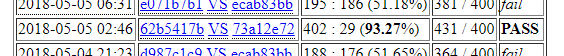
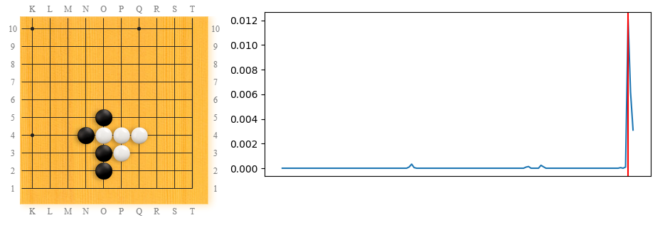
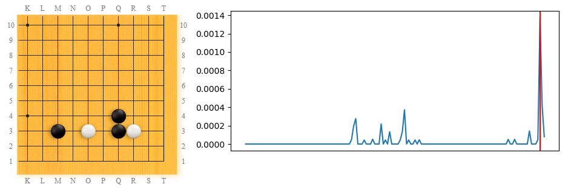
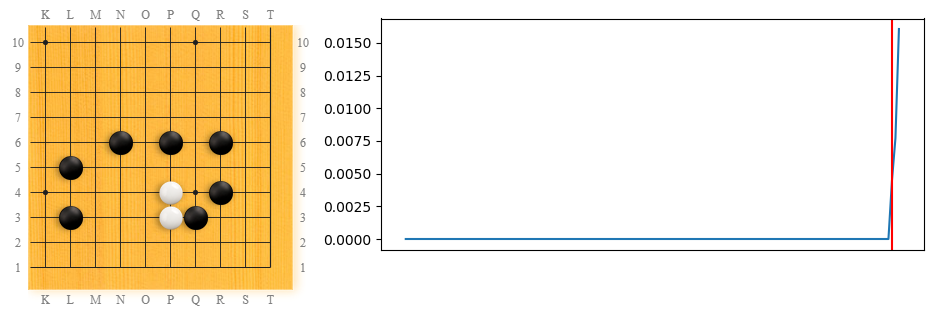
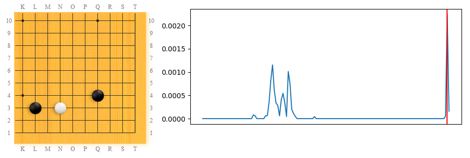

This is part of the series from the study of LeelaZero's opening patterns page.
This article is about the influence that Facebook ELF AI had on LeelaZero's corner patterns that occur in self-play games. I am not sure if it causality or just correlation since I don't know if ELF was used in training matches with the pure-LZ network, so "influence" is used loosely. We focus only on patterns that occur in a board quadrant (10x10). The analysis covers games from LeelaZero matches between versions up to and including 7c6588ce (which became best version on May 21st, 2018).
The weights from the neural-network used by Facebook ELF AI started being used in LeelaZero around the beginning of May 2018. We can see on LeelaZero's progress page the first match between the LZ-ELF hybrid network 62b5417b and the pure-LZ best network of that time, 73a12e72: LZ-ELF won 402:29.

In general, LZ-ELF is much stronger than pure-LZ; after the first match mentioned above (percentage win 93.27%), the same version of LZ-ELF beat improved pure-LZ versions by 94% and 89% in two more matches. We can see the gap between the pure-LZ best current networks (blue dots) and the LZ-ELF network (light-gray cross) in the graph snapshot below:
In the 10 or so LZ networks before (and shortly after) ELF (roughly the versions from 18e6a6c5, the May 2nd champion up to and including 521b0868 from May 20), the top two patterns come either from 3x3 invasions (with no other stones nearby the 4x4 stone) or from a 3x4 opening where the opponent approaches with keima, and the reply is a calm keima on the side.
We see that the popularity of the 3x3 invasion suffered recently (on the left of the red line), then it picked up again, only to fall dramatically in the last few versions in the graph.
Look at the aligned time axis of the two graphs - on the left side of the red line, the drop in popularity for 3x3 invasion matches nicely with the raise in popularity of the 3x4.
On the right hand side of the graph though, the story is different: both 3x3 invasion and 3x4 fall dramatically in the last few versions - what is going on? We will see the answer to that when we look in detail at those post-ELF versions.
It is only at version 521b0868 when LZ starts approaching the opponent's 4x4 stone much more often than before; the 3x3 invasion is still preferred in this version (in proportion of roughly 3:2 to the approach). After the opponent replies with a keima on the side, the tsuke that AlphaGo popularized is the most frequent follow-up. The variations starting from keima approach form the 2nd most popular variation (after 3x3) in this version, overtaking the 3x4 variations.
Another reply to keima kakari against 4x4 that 521b0868 started is to play tsuke on the 4th line, and after the opponent plays hane, reply with tiger-mouth. This is the most frequent outcome:

Another pattern worth mentioning from this period in general is the direct kick (kosumi-tsuke) when approaching a 4x4 stone. This is not a recent innovation, but it became quite popular in recent versions as we can see from the timeline. It drops a lot in the post-ELF networks though.
One of the most popular human joseki from 4x4 surged to popularity in this time frame too, the one that starts with keima kakari and tight pincer:

An interesting move is the slide against a 4x4 (after the approach move is ignored). This seems very slow (as opposed to playing double-approach), so no wonder it did not became popular. By the way, black's most frequent reply was at 3x3.
Another continuation tried by LZ in this period after keima/keima against 4x4 that looks strange and probably will not become popular in the long term is this jump:
Another 4x4 related pattern that is peculiar to one of these versions is this high pincer. This used to be very popular in human play in the 20th century, but is less seen recently.
Another thing peculiar to version 521b0868, this time about 3x4, is the fact that it doesn't play the peaceful keima on the side in reply to a keima-kakari anymore, but instead it prefers to kick (kosumi-tsuke), and this is the most common outcome in 521b0868:
One innovation of this network is this counter-attack: white playing on the middle of the lower-side (K3) in response to black's attack at M3. This seems to be even more popular in the next version, then got discarded (maybe unreasonably aggressive?).
Another move that caught my eye was this shoulder hit against an ogeima ("large keima") shimari. Looks like it was a one-version only thing.
Related to ogeim-shimari: the 4x4 contact move against it was seen in LZ before, but here it really surged in popularity for just one version, for some reason. The reason most like is that ogeime-shimari itself surged in popularity in this time frame.
Last 3x4 pattern I want to show from this period is called "Unfair Fight":

The last network included in the analysis above was 521b0868 from May 20, 2018. That was only king for half a day, when 11057dd7 took over with 231:180 (56.20%). The result is in the normal range of wins, but if we look at the patterns we notice that 11057dd7 is an inflexion point. The #1 pattern in this version comes from keima against 4x4, so I guess it is "goodbye boring 3x3 invasions - for now"! Close at #2 is kosumi-tsuke against a 3x4 approach, and the 3x3 invasion does not show up until position 10.
One interesting shape that comes up now is from white ignoring black's tight pincer - black follows-up with 3x3 reinforcement (I have seen this in pro games too sometimes).
LZ also experiments with what looks like a more natural follow-up, covering from above, but this is much less popular:
I have seens the ogeima approach against 4x4 in other pre-ELF versions too, but this is the first time I see the tight pincer in reply:

Network 11057dd7 was king for a day (almost precisely 24 hours!) until 7c6588ce came along. In 7c6588ce the patterns that come from keima approach to 4x4 dominate even more; the same 3x4 pattern that was #2 in 11057dd7 is now at #7, and the 3x3 invasion does not come up until #12. By the way, 7c6588ce is the last pattern to be studying in this analysis session.
The most striking novelty in 7c6588ce is jumping out from the tight pincer after keima approach to 4x4, rather than jumping into 3x3:
Since this is a newly occurring pattern, I hope LZ will spend more versions experimenting with it, since this used to be a popular variation during Go Seigen days and I hope LZ will find some interesting variations on it!. Here are a couple of variations in this LZ version (sorry for the color flips!):
And here's the #60 pattern in this last analyzed LZ version, also known as the "It's a bird! It's a plane!" pattern. Noticeably, this is not a fluke, it has been "a thing" in the first half of LZ's history, as we can see from the timeline:
To conclude: whether it is by chance or by influence of Facebook ELF AI, LeelaZero started exploring more in May 2018 around patterns starting with 4x4 and in particular it is looking at moves that have been popular in human play for many years. It is very exciting to see this, since for what felt like a long while, LeelaZero seemed stuck in automatically invading at 3x3 which led to very uninteresting openings. Also, LeelaZero keeps getting stronger and stronger - I guess it is already better than the AlphaGo-Lee version (even when ran on a single GPU machine). Recent versions defeated Hajin Lee 3p after giving her one handicap (2 stones minus 7.5 komi), most recent game in the series is here and they will play tomorrow with 3 handicap!